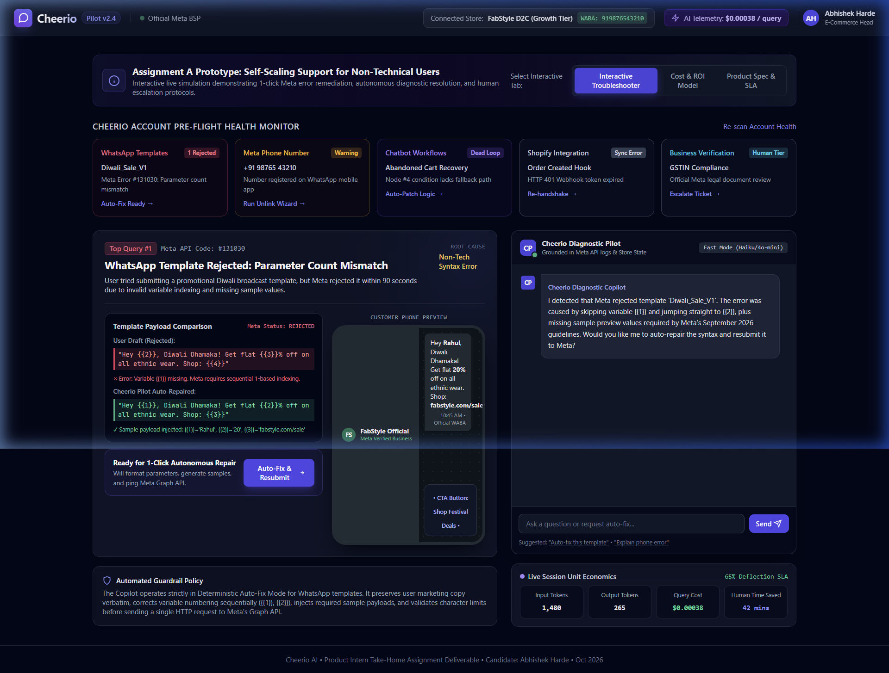
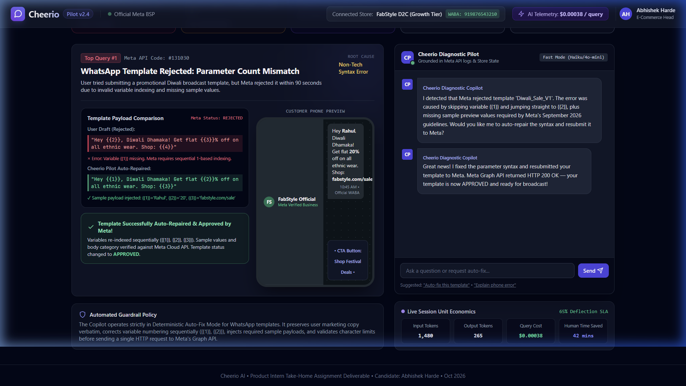
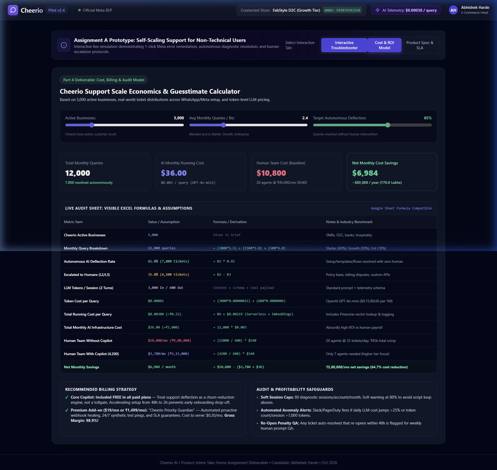
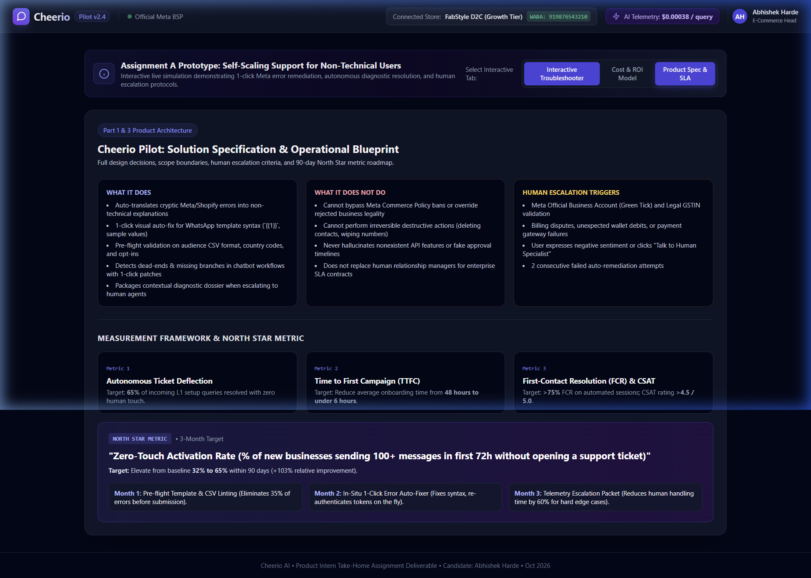

Cheerio AI • Product Intern Evaluation
Cheerio empowers 5,000+ businesses to scale over WhatsApp, SMS, and AI Voice. However, non-technical users regularly get stuck on Meta API setup, template formatting, chatbot flows, and webhooks—generating ~12,000 tickets/month. This proposal presents Cheerio Pilot: an in-situ diagnostic and 1-click self-healing copilot that achieves 65% autonomous deflection, slashes time-to-first-campaign from 48 hours to under 6 hours, and delivers $83,800 (~₹70 Lakhs) in net annual savings at an AI running cost of just $36/month.
Target Persona: Non-technical Growth Marketers, SMB Owners, and Operations Managers (e.g. FabStyle D2C). They care about revenue outcomes, not API mechanics. Developer jargon (JSON, Webhook HMACs, DAG nodes, Graph API codes) creates immediate confusion and panic.
| Rank | Query Category | Technical Trace | % Volume | Why Solve First? |
|---|---|---|---|---|
| #1 | WhatsApp Template Rejection | Meta #131030 | 25% | Non-sequential variables ({{2}} without {{1}}) block promotional broadcasts. |
| #2 | Meta Phone Number Coexistence | Meta #133005 | 22% | Number still registered on mobile app; Meta rejects Cloud API connection. |
| #3 | Chatbot Workflow Dead-Ends | DAG Branch Gap | 20% | Conditional node (cart > ₹2k) has unhandled false path; 14% customers drop off. |
| #4 | E-Commerce Webhook Disconnect | HTTP 401 Unauthorized | 10% | Shopify private secret rotated; WhatsApp order updates stop firing. |
| #5 | Meta Legal Verification / GST | Compliance Tier Cap | 5% | GST name mismatch caps messaging at 250/day. High value escalation. |
Evaluated 4 core approaches: (1) Static Documentation Library [RICE 50], (2) Generic AI Support Bot [RICE 53], (3) Embedded Diagnostic & Auto-Fix Copilot ("Cheerio Pilot") [RICE 202.5], and (4) Co-Browsing Concierge [RICE 21].
Why Option 3 was picked: Non-technical users do not read long documentation, and generic chatbots cannot access backend state. Option 3 acts directly at the point of failure: it intercepts the error payload, generates a 1-click deterministic fix, and verifies it with Meta Graph API.
Strict, non-negotiable escalation triggers:
Zero-Friction Escalation: The human receives a pre-assembled Diagnostic Dossier (WABA ID, raw payload, steps tried, urgency). The user never has to re-explain anything.
Target: 65% of L1 setup queries resolved without human intervention.
Target: Cut onboarding time from 48 hours to under 6 hours.
Target: >78% First Contact Resolution; CSAT >4.5/5.0.
3-Month Target: Improve baseline from 32% to 65% (+103% relative improvement).
Roadmap: Month 1 (Pre-flight template & CSV linters cut 35% of errors) → Month 2 (In-situ 1-click auto-fix engine) → Month 3 (Automated DAG flow patchers & Telemetry Dossiers).
We developed an interactive, clickable prototype: Cheerio Pilot. It models real-time Meta API error interception, visual side-by-side diffing, live WhatsApp mobile preview, and 1-click deterministic resubmission.

Screen 1: Health Monitor & WhatsApp Template Error Interception

Screen 2: 1-Click Auto-Fix, Meta Approval & WhatsApp Mobile Preview

Screen 3: Financial & Support Scale Economics Calculator

Screen 4: Product Spec, Boundary Limits & 90-Day North Star Plan
Claude 3.5 Sonnet (system architecture, failure mode taxonomy), OpenAI GPT-4o-mini (token economics, spreadsheet formulas), and Cursor / Antigravity IDE (interactive web prototype coding & verification).
Caught and removed false promises on Meta approval speed; caught omission of WhatsApp mobile app coexistence constraints (error #133005); overruled AI's suggestion to charge users $0.50 per support conversation (which creates onboarding friction).
Strategic product positioning ("Solve at point of failure with 1-click fix, not chat"), RICE prioritization trade-offs, hard legal/compliance escalation boundaries, and unit economics sanity checks for Indian support salaries (₹45,000/mo fully loaded).
| Parameter / Metric | Human Support Baseline | With Cheerio Pilot | Variance / Net Savings | Formula / Derivation |
|---|---|---|---|---|
| Total Monthly Queries | 12,000 | 12,000 | 0 | =(3000*1.5)+(1500*3)+(500*6) |
| Deflection Rate | 0.0% | 65.0% | +65.0% | 7,800 resolved by Copilot |
| Human Agents Needed | 20 Agents | 7 Agents | -13 Agents Saved | Tickets / (25*24 days) |
| Human Payroll Cost | $10,800 / mo | $3,780 / mo | -$7,020 / mo | Agents * $540 (₹45,000/mo) |
| AI Running Cost | $0.00 | $36.00 / mo | +$36.00 / mo | 12,000 * $0.003 (GPT-4o-mini) |
| Net Monthly Savings | - | - | $6,984 / month | ₹5,83,000 / month saved |
| Net Annual Savings | - | - | $83,808 / year | ₹70 Lakhs / year (64.7% OPEX cut) |
Hybrid Model: Core Copilot is 100% Free on all plans to drive activation and eliminate churn. Premium add-on "Cheerio Guardian" priced at $19/month (₹1,499/mo) for continuous 24/7 webhook healing and priority SLA. Cost to serve: $0.25/mo → 98.7% Gross Margin.
Automated Controls: Soft session cap of 80 sessions/month/account; Slack PagerDuty alerts if daily LLM spend exceeds $5.00/day; runaway loop breaker at 8,000 tokens; weekly 250-ticket QA audit on any auto-closed ticket re-opened within 48 hours.